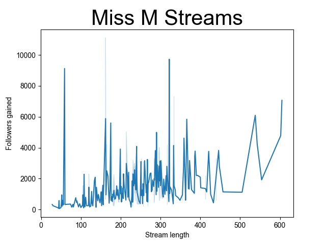
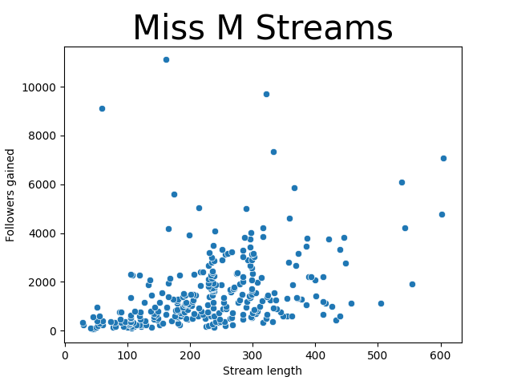
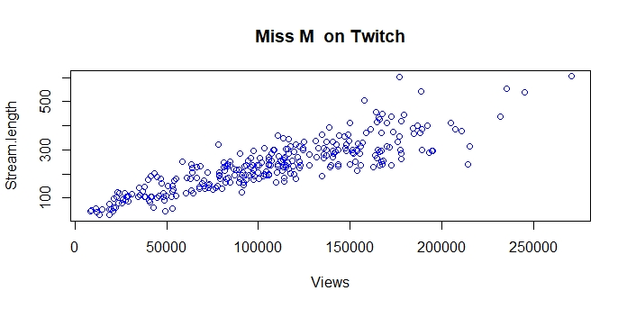

BACKGROUND
Miss M is STAR Twitch streamer who's been streaming frequently for years. She has 750,000 followers As such she has a robust dataset and is tracked by all the External Trackers including Sullygnome.
The key stakeholder is Me, the analyzer, who does not have access to what Twitch provides all registered streamers. All I can get from Twitch is the total number of followers from her site.
Although I can get some detail from an external site, like Sullygnome. Sully only allows the download of CSV files of 100 lines a time. I choose her because I am familiar with her activities, and it's a chance to combine CSV files. Three consecutively dated 100 day CSV files were downloaded. It totalled less than 100k of data.
I started by combining the 3 spreadsheets. I needed to take the column name headers off the second and third then simply highlighted, and copy and pasted them, to the end of the first, watching my alignments. I eliminated some columns and scanned the spreadsheet for oddities.Using Python and Seaborn. Her data showed some outliers that could skew results.
I sorted the data in a spreadsheet based on the column with the extreme data, and reduced the upper and lower ranges of the data by deleting rows at the beginning and end. We now have less than the 300 starting records.
And reran the same plot.
Tried a few other things


I tried Tableau Public next with the following resultsI solved my date format problem!
Wrong, I was missing weeks.

Worked it out This cleaned data next went to RStudio with the following results.

Observations and Conclusions:
Miss M .
My real purpose of this case study was again to work in the various platforms with a data set 3 times larger again.Discovered I could still use spreadsheet for data wrangling and did not have to go to a SQL database. Again third party free data was limited in the columns released and I had no certainty it had not been tampered with. If working on a real project best to register for the Twitch Api and get the data at it's source.
Thanks again to Sullygnome for my main data .
And for my next real life projexct I know what to do.